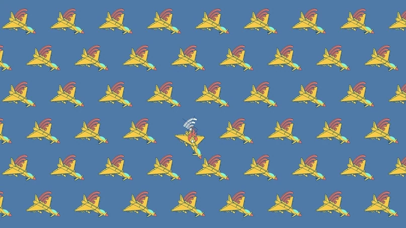
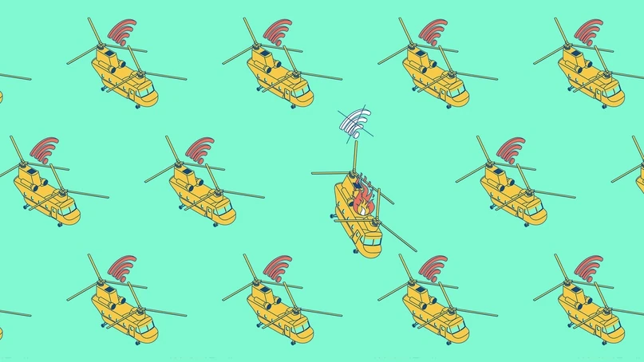
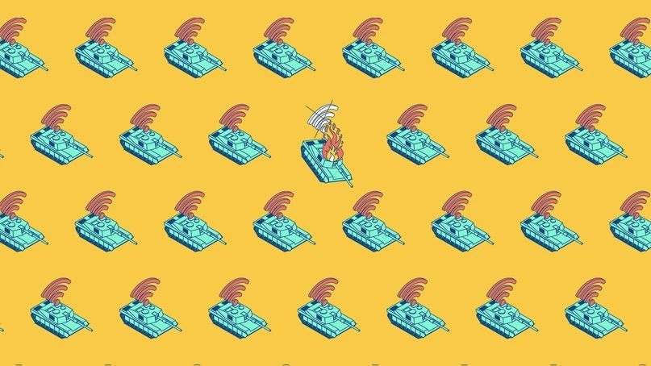

Александр Сорге — о том, почему словосочетание «свободный интернет» скоро станет архаизмом и при чем тут Huawei
Желтолицый вождь американского народа объявил священную торговую войну красной заокеанской империи — Китаю. То, что первым в этой битве был ранен именно технологический гигант Huawei, нож в спину которому воткнули его же братья — Google, Microsoft и прочие высокотехнологические корпорации, — грозное знамение для всего Интернета. Эпоха цифрового Дикого Запада подходит к концу, а американский крестовый поход может обернуться дроблением Всемирной сети на суверенные куски.

Атака
Сегодня интернет стал для нас эдаким «святым духом», пропитавшим все сферы нашей жизни. Святым, потому что мы уже не представляем без него жизни. Общение, работа, развлечения и порой даже секс — все это сегодня застряло в цифровой паутине. Благо что в наши дни подключение к интернету есть даже у какого-нибудь умного чайника. Духом же, потому что толстые черные кабели уходят в прошлое: все и вся омывается ласковыми волнами Wi-Fi и мобильного интернета. Мобильные сети пятого поколения (они же 5G) сделают нашу жизнь еще комфортнее: видео на Pornhub будет загружаться еще до того, как вы расстегнете ширинку, а минимальная задержка передачи данных позволит общаться предметам напрямую. Как результат, это даст серьезный толчок развитию интернета вещей.
Только представьте: умная кофеварка, связавшись с вашим смартфоном, сварит вам чашечку ароматного кофе ровно за минуту до будильника. По дороге на работу или с работы ваша беспилотная «Тесла», получая данные о трафике онлайн, «разговаривая» с другими автомобилями, сама объедет пробки и найдет парковку. Ну а умный дом, получив уведомление от коммунальных служб, до вашего приезда включит водонагреватель. Ведь хоть будущее и наступило, вы все еще живете в России, где две недели без горячей воды летом — старая славная традиция.
В общем, идиллия. В масштабах страны такая информационная синергия, когда сотни устройств, датчиков и локальных сетей связаны в одну большую паутину, сделает «умными» целые города, позволит оптимизировать потребление электричества и воды, повысит скорость банковских операций. Словом, сделает экономику более эффективной, а прекрасную Россию будущего — еще более прекрасной.
Правда, у такой тотальной информатизации есть и парочка небольших минусов. Во-первых, в любую компьютерную сеть, даже самую защищенную, вполне можно проникнуть, если она связана с интернетом. В 2003 году над Америкой прошел «Титановый дождь»: в ходе серии кибератак хакеры (предположительно китайские) получили доступ к сетям NASA, Lockheed Martin (занимаются разработкой вооружения ВВС США), Sandia National Laboratories (занимается разработкой ядерного вооружения), Redstone Arsenal (занимается разработкой ракетного вооружения США).
Во-вторых, благодаря тотальной цифровизации, от хакерской атаки может пострадать любая сфера нашей жизни. Это наглядно показала эпидемия вируса Wannacry, когда из-за вредоносного червя была парализована работа сотен организаций: от банков до больниц и аэропортов.
В-третьих, кибертеракты могут привести к вполне реальным жертвам и физическому ущербу. Из-за уже упомянутого Wannacry в ряде британских госпиталей пришлось отложить множество срочных операций. Большинство процессов на заводах и предприятиях сегодня автоматизированы и управляются компьютерами. Эксперимент Национальной лаборатории Айдахо, проведенный в 2007 году, наглядно показал, что вредоносная программа, подключившись к системам управления энергосетями, может разнести генератор в щепки.

Но, что более страшно, главное преимущество такой информатизации — связанность сетей и объектов — оказывается ее же главным недостатком. Уже сегодня потоки транспорта, информации, электроэнергии, воды, нефти и даже денег, хоть и косвенно, но связаны между собой. В такой ситуации удар по одной системе, благодаря каскадному эффекту, может привести к катастрофе. Сети же 5G сделают проведение такой атаки еще проще, ведь каждый умный холодильник в этом море умного барахла, подключенного к интернету, становится точкой входа для хакера. Утрируя: подключившись к вашей кофеварке, злоумышленник сможет обрушить энергосистему целой страны.
Спланированная же государством кибервойна будет напоминать рукотворный апокалипсис: полный хаос на дорогах, улицы, затопленные нечистотами, отключение электричества и воды в городе, взрывы на химических заводах за городом, десятки самолетов в воздухе без связи с землей и, конечно же, никакой возможности расплатиться своей кредиткой. Все это напоминает сюжет голливудских фильмов, однако он гораздо ближе к реальности, чем кажется.
Какое же отношение к этому имеет Huawei? Самое прямое. Наивно полагать, что конфликт разгорелся вокруг китайских смартфонов, которые якобы помогают собирать информацию о свободных гражданах страны яблочного пирога, и американские техногиганты просто испугались конкуренции на рудниках биг-даты. Дело здесь вовсе не в банальной слежке. Компания из Поднебесной — крупнейший поставщик телекоммуникационного оборудования. Кабели, маршрутизаторы, коммутаторы, вышки — она поставляет абсолютно все для постройки и обслуживания сетей связи.
Более того, Huawei эти сети до недавнего времени успешно строила в Австралии, Японии, Британии и Европе. По данным Times, китайские компании контролируют от 40 до 60 процентов сетей, в которых работают бизнесмены, дипломаты, шпионы и обычные граждане. Даже интернет-кабели, соединяющие Старый и Новый Свет, принадлежат китайцам. Просто потому, что они строят дешевле конкурентов. И все бы ничего, только вот отдавать строительство коммуникаций, на которых завязано большинство критической инфраструктуры, — все равно что закупать детонаторы для ядерных боеголовок на «Алиэкспрессе». Последствия будут примерно теми же.
Летом прошлого года хакеры из австралийского Управления радиотехнической обороны провели учения по взлому китайского оборудования для сети 5G и оценили, какой ущерб нанесет кибератака. Результаты настолько шокировали австралийцев, что они немедленно связались со своим главным партнером — США. И именно после этих учений Штаты ввели санкции против Huawei, именно после них Япония, вслед за Австралией и Новой Зеландией, отказалась от постройки китайских сетей 5G, а Германия и Британия приостановили сотрудничество с Huawei. Ведь такой взлом будет напоминать конец света.
«Выяснилось, что через сети 5G можно получить доступ ко всей критической инфраструктуре Австралии, от электростанций до систем водоснабжения и канализации». — Meduza
Это не означает, что Huawei — корпорация зла, которая намерена захватить мир и жидко нагадить глупым лаоваям. Просто когда пробьет час, у компании, основанной бывшим военным инженером, не останется никакого иного выбора, кроме как п��дчиниться воле компартии. Глупо полагать, что Huawei не сможет взломать свои же сети, а учитывая то, что у Китая всегда был только один союзник — Китай, это может закончиться плачевно для всех, кто решит довериться «партнерам» из Поднебесной.

Оборона
Неудивительно, что двубортными пиджаками и военными кителями интернет начинает восприниматься как плацдарм для операций вероятного противника. Если раньше священный джихад в Сети вели только корпорации и правообладатели против неверных пиратов, то сегодня в этот информационный океан входят государственные эсминцы.
Вредоносные программы вполне могут быть приравнены к оружию массового поражения, тем более что ущерб они могут наносить сопоставимый.
Вирус Stuxnet, авторство которого приписывают сумрачным гениям из ЦРУ и МОССАД, вывел из строя 1000 иранских центрифуг по обогащению урана, даже несмотря на то что система не была подключена к интернету. Ядерная программа Ирана «была отброшена по крайней мере на два года назад» и все это без авиаударов и толп солдатни. Новая военная доктрина США вообще приравняла кибератаки на страну к casus belli — такому же поводу к войне, как и обычное вторжение. Группы хакеров же становятся эффективнее отрядов спецназа или солдат удачи: структуры наподобие американского Кибернетического командования или российских Войск информационных операций существуют в любой мало-мальски развитой стране.
Ну а когда интернет и коммуникации начинают затрагивать национальную безопасность, эрекция возникает даже у самого престарелого «ястреба», неважно, сидит он в Москве или Берлине. Национальные сегменты Всемирной сети вполне справедливо начинают считаться своеобразными территориальными водами, которые нужно защищать. И, конечно же, все, что плавает в этих водах, должно подчиняться юрисдикции страны. Казалось бы, и что с того: ну будет у нас парочка закрытых резерваций наподобие китайнета — остальной же свободный интернет отстоит добрый американский рыцарь в сияющих латах. Ведь цифровые железные занавесы выгодны только ботоксным квазидиктаторам, которые мечтают о том, чтобы противная чернь не мешала им спокойно воровать, разве нет?
Не совсем. Документы, слитые Сноуденом, ясно показывают, что за забралом скрывается лицо если не скверного, то очень хитрого рыцаря. Сенсацией информация стала не из-за факта, что разведчики (сюрприз) шпионят за всеми и приглядывают даже за своими союзниками, а потому, что выяснились масштабы слежки. Программы АНБ под названием UPSTREAM и STELLARWIND собирали, хранили и анализировали весь иностранный интернет-трафик, пересекавший границы США. Программа BLARNEY использовала «коммерческие партнерства» для шпионажа в таких международных организациях, как Международный валютный фонд, Всемирный банк, Европейский союз, Организация Объединенных Наций.
В рамках этой же программы АНБ собирало информацию и о союзниках США, таких как Италия, Япония, Бразилия, Франция, Германия и Мексика. У АНБ есть даже свой google, чтобы ориентироваться во всей этой лавине информации — программа XKeyscore. Штаты не предпринимают никаких ограничительных мер в отношении глобальной Сети по одной простой причине — это и так их сеть. Не физически, естественно. Но закулисный кардинал Всемирной сети сейчас — американское АНБ. А большинство населения планеты пользуется сервисами компаний, находящихся в юрисдикции США.
Но это не значит, что и партнеры американцев будут сидеть сложа руки, наивно надеясь на благоразумие большого звездно-полосатого брата — мало кому нравится, когда за ним подглядывают, да еще и так нагло. В такой ситуации расслоение интернета неизбежно, ведь в сознании дормидонтов из любого парламента он начинает делиться на «свою часть», где хозяйничают они, и «чужую», где властвуют другие.
Причем «своими» теперь могут считаться только те, кто хранит данные в пределах государственных границ. Google и Facebook сколько угодно могут называть себя «корпорациями добра» и «гражданами мира» но их проблема зеркальна проблеме Huawei — это американские корпорации, которые любезно делятся информацией с американскими спецслужбами: Google, Microsoft, Yahoo, Apple, Facebook и Dropbox предоставляли доступ к пользовательским данным в рамках программы PRISM.
В этом свете российский дрейф в сторону «суверенного интернета», бессмысленный и беспощадный, — лишь отражение общемировой тенденции (хоть и обусловлен этот дрейф явно не интересами безопасности страны).
Общий регламент по защите данных (GDRP), предписывающий хранить информацию о гражданах ЕС на серверах в пределах Евросоюза, — лишнее тому подтверждение. Это не значит, что в ближайшем будущем все ринутся ставить заглушки на трубу с интернетом. Самоизоляция может пойти и по вполне мягкому пути. Законы, позволяющие штрафовать владельцев соцсетей на 50 миллионов евро, наподобие немецкого NetzDG, поумерят пыл интернет-гигантов вроде Facebook. Ну а отмена сетевого нейтралитета может попросту сделать их непривлекательными уже для пользователей: возникнет множество клонов того же Facebook, но уже с национальными особенностями.
Когда ролики на богомерзком YouTube грузятся полчаса, а на православном «Рутубе» — пять минут, большинство, естественно, предпочтет отечественный аналог. И ничего, что вместе с тобой смешное видео про котиков будет смотреть и товарищ майор.
Трамп приставил пистолет к виску Huawei. При этом мистер президент ясно дает понять: либо вы с нами, либо против нас. Когда британцы объявили, что не собираются полностью отказываться от китайского оборудования, Трамп пригрозил прекратить обмен секретной информацией со спецслужбами Великобритании. Выстрел же из этого пистолета будет сигнализировать о старте нового передела мира, только уже в параллельной, цифровой реальности. Правда, закончится такая холодная цифровая война, скорее всего, весьма плачевно: глобальная Сеть просто треснет под натиском всех этих борцунов-тяжеловесов и распадется на суверенные осколки.
Ну а обычные зрители, которым плевать на все эти геополитические соревнования (то есть мы с вами), получат утешительные призы: американет с большими пушками и яблочными пирогами, евронет с толерантностью и гомосеками, ну и, конечно же, чебурнет с духовностью и ласковым дыханием майора ФСБ у затылка. В общем, скоро каждому удастся полной мере оценить «удобство» интернетов (теперь уже в прямом смысле этого слова). Поэтому хватит гулять на природе, ходить по впискам и бухать в подворотнях теплыми летними ночами. Запритесь дома, не выходите из комнаты и целиком обмажьтесь продуктами жизнедеятельности Всемирной сети, чтобы в полной мере насладиться последними днями свободного интернета.